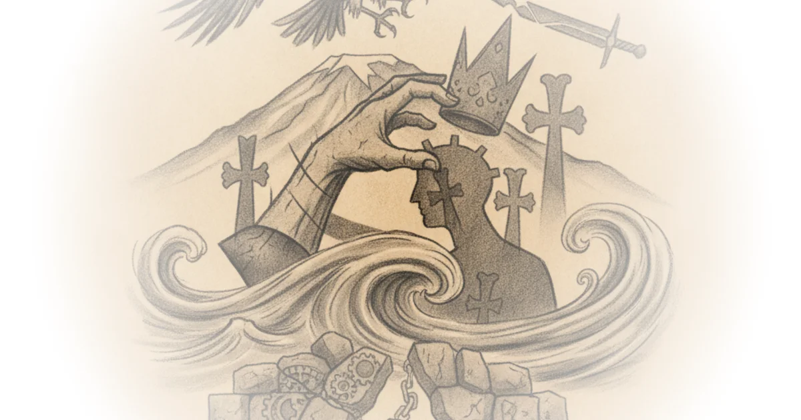

This piece from The Pillar does not merely report a political dispute; it documents a constitutional crisis where the state attempts to seize control of a nation's spiritual soul. The most startling claim is not just that the government is investigating the Church, but that the executive branch is explicitly preparing to install an "interim Catholicos," effectively nationalizing the head of an institution that has defined Armenian identity for 1,700 years. For a reader tracking the erosion of religious autonomy in post-Soviet states, this is a critical case study in how "security" rhetoric can be weaponized to dismantle traditional power structures.
The Architecture of a Coup
The Pillar reports that the Armenian Prime Minister announced a "systemic crisis" within the Armenian Apostolic Church, a declaration that serves as the legal pretext for a government-led reform program. The piece details how the administration plans to remove Karekin II, the Supreme Patriarch, and replace him with a state-appointed interim leader. This is not a simple administrative reshuffle; it is a direct challenge to the canonical independence of the Oriental Orthodox communion, a family of churches that diverged from the Chalcedonian tradition after the Council of Chalcedon in 451 A.D.

The government's strategy relies on a narrative of corruption and foreign interference. The Pillar notes that the Prime Minister has publicly referred to the Catholicos by his baptismal name, Ktrich Nersisyan, a deliberate move observers interpret as a refusal to recognize his spiritual authority. The administration argues that the Church has been "politicized" and must be brought into the "field of canonicity." The piece quotes the government program stating that reform is a "vital necessity" to "exclude attempts by external forces to turn the Armenian Apostolic Holy Church into a foothold for hybrid warfare."
This framing is particularly potent because it weaponizes the very real trauma of recent military losses. The conflict with Azerbaijan over Nagorno-Karabakh has displaced hundreds of thousands of ethnic Armenians, and the Church has been a vocal critic of the government's handling of the war. By accusing the Catholicos of having ties to "foreign intelligence services" and even alleging he fathered a child in violation of his vows, the administration attempts to strip the religious leader of moral legitimacy. The Pillar highlights the Prime Minister's stark response to opposition concerns about public trust: "That is precisely where the problem lies: 97% of the citizens of the Republic of Armenia believe, while the head of the Church does not believe in God at all."
"Reforming the Armenian Apostolic Holy Church is a vital necessity for addressing the issue of having a value-based spiritual life."
Critics might note that the government's definition of "hybrid warfare" conveniently aligns with any dissent against the state, turning a theological dispute into a matter of national security. The article suggests that the Prime Minister's demand for an "integrity check" on future candidates effectively grants the state veto power over the Church's internal leadership, a precedent that could permanently alter the balance of power in the region.
The Human Cost of Institutional Struggle
Beyond the legal maneuvering, the piece underscores the human toll of this standoff. The conflict has moved from the pulpit to the courtroom, with the Catholicos and five other bishops facing criminal charges for disobeying a court order to reinstate a pro-government bishop. The Pillar reports that if found guilty, these spiritual leaders could face two years in prison. This legal escalation follows the dismissal of Bishop Gevorg Saroyan, an ally of the Prime Minister, who was laicized by the Church after calling for the Catholicos's ouster.
The article paints a picture of a society fractured by competing loyalties. While the government claims it is acting to ensure "spiritual security," the opposition argues that the state is overstepping its bounds. One Member of Parliament responded to the Prime Minister's allegations by noting that "97% of Armenian citizens trust the Armenian Apostolic Church," suggesting that the government's actions are out of step with the populace. The piece also touches on the broader geopolitical implications, noting that the Vatican and other Christian bodies are watching closely, especially given Azerbaijan's "caviar diplomacy" and its attempts to rewrite the history of Armenian monasteries in disputed territories.
The Pillar points out the irony that the government's crackdown comes after the Church issued pastoral letters calling for the Prime Minister's resignation following the 2020 and 2023 wars. The administration's response has been to double down on accusations of foreign ties, claiming the Catholicos's brother, a bishop in Russia, is a conduit for foreign intelligence. This narrative is dangerous because it delegitimizes the Church's role as a moral conscience, recasting it as an enemy of the state.
"If Karekin II or Ktrich Nersisyan accepts the reform agenda of the Armenian Apostolic Church, I solemnly declare from this podium that I will sit down and discuss that agenda with him with the utmost respect."
The conditional nature of this offer reveals the administration's true goal: not dialogue, but submission. The government is not asking for the Church to reform itself; it is demanding that the Church accept a state-imposed charter and leadership. The piece argues that this approach risks "effective nationalization" of the church, a move that could have reverberating effects across the entire Oriental Orthodox communion, from Ethiopia to Egypt.
Bottom Line
The strongest element of this coverage is its unflinching exposure of how "anti-corruption" and "national security" narratives are being used to justify a power grab over religious institutions. The piece effectively illustrates the fragility of religious autonomy in a small, war-torn nation where the state feels threatened by any independent source of authority. However, the coverage's biggest vulnerability lies in its reliance on government claims regarding "foreign interference" without fully exploring the complexity of the Church's actual diplomatic relationships, which are often rooted in centuries of diaspora support rather than current intelligence operations. The reader should watch closely to see if the international community, particularly the Vatican and the Oriental Orthodox communion, will intervene to prevent the precedent of state-appointed religious leaders from taking hold in the South Caucasus.